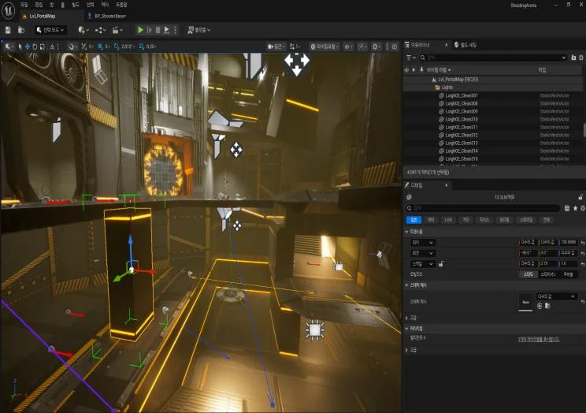

01 / 03
2026년 · 3학년 프로젝트대표 프로젝트
BATTLE
ARENA
ARENA FPSUNREAL ENGINE 59인 팀
맵을 빠르게 이동하며 무기와 아이템을 획득하고, 가장 높은 킬 수를 노리는 아레나 FPS.
정확한 조작과 빠른 상황 판단을 바탕으로, 유리한 위치를 선점하고 교전을 선택하는 경쟁의 재미를 목표로 제작했습니다.
MY ROLE팀장 · 레벨 기획 및 제작
실제 게임 플레이 영상 · 클릭하면 재생됩니다
LEVEL DESIGN / ITERATION
레벨을 다시 설계한 이유
순환 동선 구현에 집중했던 초기 레벨은 빠른 적 조우와 상황 판단이 충분히 드러나지 않았습니다. 이를 재검토하고 이동과 교전 선택이 자연스럽게 이어지도록 재설계했습니다.
BEFORE / 수정 전 레벨 플레이
AFTER / 수정 후 레벨 플레이
COLLABORATION & LEADERSHIP
레벨 제작과 팀장 업무를 함께
직접 수행한 레벨 제작과 다른 파트의 구현 검토를 구분하여 경험을 정리했습니다.
01 / 직접 제작레벨 기획 · 제작
레퍼런스 분석과 모작, 레벨 제작 및 구조 재설계를 수행했습니다.
02 / 검토 · 조율분야별 구현 확인
AI, 전투 시스템, 이펙트, 레벨, 서버가 기획 의도에 맞게 동작하는지 검토했습니다.
03 / 업무 운영업무 관리 자동화
GPT와 Trello를 활용한 업무 배정, 체크리스트 관리, 미완료 업무 보고 자동화를 적용했습니다.
WORK CAPTURES작업 화면 · 클릭하면 이미지 확대, 영상 확인 또는 상세 위치로 이동

레벨 직접 제작 과정 ↥레벨 확인LEVEL REVIEW / 01 — 02
01 / 02 · 블록아웃 구조
팀원 레벨의 구조와 공간 구성을 검토한 자료입니다. 두 이미지는 동일 레벨의 수정 전·후 비교라고 단정하지 않습니다.